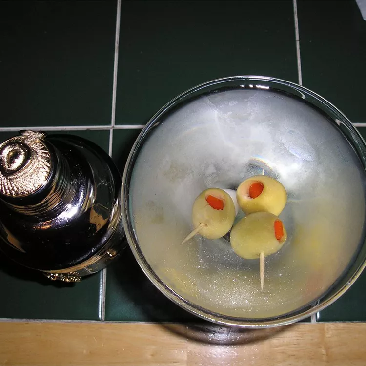

Martini

Description:
A James Bond favorite, the Dry Martini is simple and elegant. While we don't know the exact origin of the Dry Martini, we do know that the cocktail made with dry gin, dry vermouth, and orange bitters is best served with a lemon twist.
Ingredients:
- 2 ½ fluid ounces gin
- ½ fluid ounce dry vermouth
- 1 pitted green olive
- 1 cup ice
Directions:
- Scoop ice into a shaker
- Pour in gin and vermouth
- Cover shaker, and gently shake to mix vermouth and gin
- Pour drink, without ice, into a cocktail glass. Gently drop olive or lemon twist into the glass